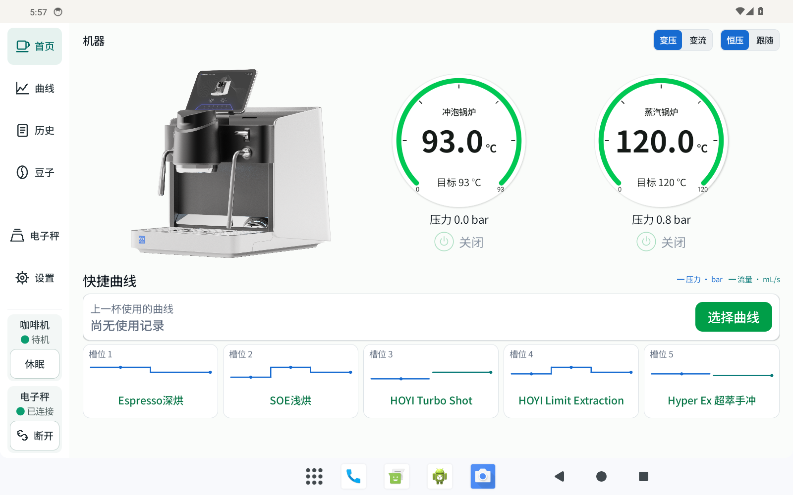
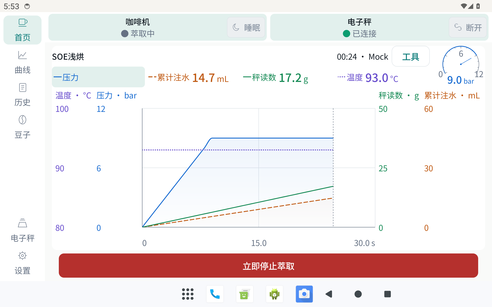
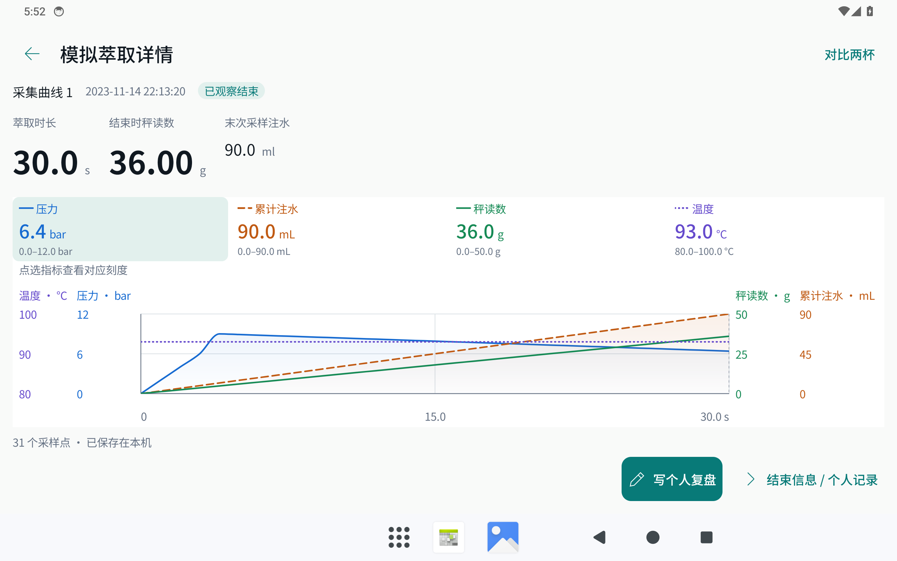

01 / BEFORE先确认设备，
先确认设备，
再选择曲线。
设备状态、双锅炉读数与五个快捷槽位，集中在首页。


先看状态，再开始。手机展示的是锅炉局部；双设备状态与快捷槽位请查看完整原图。
OPENHOYI / 开源 Android · Alpha
连接 HOYI 咖啡机与电子秤。
观察压力、温度、注水与重量，
让下一杯有迹可循。连接 HOYI 咖啡机与电子秤。
观察萃取过程，回看每一杯。
独立开源项目，非制造商官方产品。使用前了解 Alpha 边界
真实平板界面 Mock 模拟，非硬件验收
由一条曲线开始，
留下自己的冲煮记录。
设备状态、双锅炉读数与五个快捷槽位，集中在首页。

先看状态，再开始。手机展示的是锅炉局部；双设备状态与快捷槽位请查看完整原图。
压力怎样变化，重量怎样累积。让过程变得可见。

各项量程不同，不比较线条高低。画面为本机 Mock 模拟，不是真实机器正在萃取。
回看本地历史，把这一次的过程，留给下一次参考。

结束时秤读数是秤的采样值，不等于另行校准的杯中净重。记录保存在本地，支持 ZIP 导出。
01 — A STARTING POINT
选择、观察，再回看自己的记录。
不替你定义好咖啡，给你多一点理解。
这是功能容量，不是成功率。个人导入的旧版曲线目前仅支持只读查看。
02 — BEFORE YOU START
先确认适配范围，再决定是否试用。
OpenHOYI 仍是个人开发的 Alpha 项目。
03 — THE FINE PRINT
关于这些画面、现在的能力，
和你需要了解的边界。
平板实际截图采于 2026 年 11 月 6 日，设备为 M2105K81AC（Android 13）。画面来自已安装的 Mock 开发包 0.1.0（53），为本机模拟数据，不是真实咖啡机萃取记录，不是网站实时数据，也不是硬件验收。
大图只裁去系统栏；小屏仅对原图连续区域放大，并非手机端布局，没有重绘界面或拼接数据。设备已装 APK 的源码提交映射未核验，不宣称与当前源码逐字一致。截图替换了此前 CI 素材，不改变先前视觉 CI 的失败记录，也不代表原生 CI 或硬件验收通过。
首页完整原图 ↗萃取完整原图 ↗复盘完整原图 ↗设备、APK 指纹与裁切记录 ↗
开口圆环为原创抽象图形，不是产品照片、技术结构图或测量结果。网站使用本地裁剪的 Noto Sans SC 字体，遵循 SIL Open Font License ↗。
已有哪些记录：咖啡机与 BOOKOO 双设备连接、持续收数，部分已知曲线的受监护萃取，以及手动停止请求与机器实际停水的对应记录。仍待完整验收：目标重量自动停止、设置写入、异常恢复、连接稳定性及更多边界场景。实现不等于全部实机验证。
启动萃取需要确认。试用时请留在机器旁，保留机器本身的停止手段；结果未知时，先核对机器实际状态，不要反复发送指令，不自动重试控制命令。不能用 Mock 验证结果代替硬件验收。
本项目与咖啡机制造商无关联，也未获得其认证。应用会发送蓝牙控制指令，软件或协议缺陷可能导致控制异常、设备不可用甚至损坏。软件按“现状”提供，不作保证；不限制法律规定不得排除的责任。
主包用于真实设备，Lab 用于协议诊断；Mock 仅供本机模拟体验。本页没有正式 APK 下载，不宣称截图中的开发包是当前发布版本。首次构建请先阅读仓库说明。
覆盖安装需保持签名一致、版本码递增并保留数据。不要用卸载、清数据或降级绕过冲突，也不要清除未知记录。已存在设备写入结果未知时，不能当作成功或自动重发。